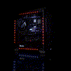

ARMA TU PC IDEAL CON NOSOTROS
En Cyber Legion nos especializamos en el armado de computadoras a medida. Ya sea para gaming de alto rendimiento, trabajo profesional, edición de video o uso diario, diseñamos y montamos tu equipo con los mejores componentes del mercado.
Nuestros servicios incluyen:
- Armado profesional de PCs
- Asesoría personalizada de componentes
- Optimización y overclocking
- Actualización de equipos existentes
- Instalación de sistemas operativos
- Garantía en todos los ensambles
- Soporte técnico post-venta
- PCs gaming RGB personalizadas
